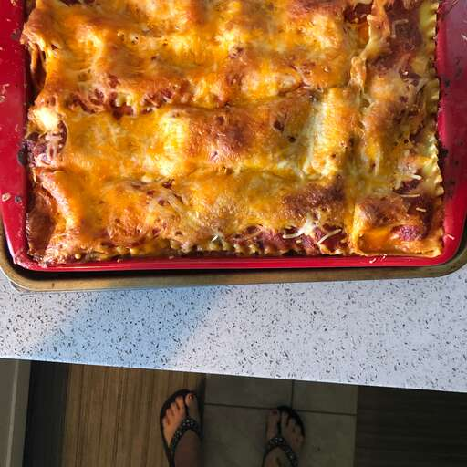

Home
Lasagna!

This lasagna with ground beef and whole wheat noodles is an easy, yet hearty family-pleasing dish.
Ingredients
- 9 lasagna noodles
- 1 pound ground beef
- 2 cups ricotta cheese
- 3 cups marinara sauce
- 2 cups shredded mozzarella cheese
Instructions
- Preheat oven to 375°F (190°C).
- Cook lasagna noodles according to package instructions.
- In a skillet, brown the ground beef over medium heat.
- Spread a layer of marinara sauce in a baking dish.
- Layer noodles, ricotta cheese, ground beef, and mozzarella cheese.
- Repeat layers until all ingredients are used, finishing with mozzarella on top.
- Bake for 30-35 minutes until cheese is bubbly and golden.
- Let it cool for a few minutes before serving.